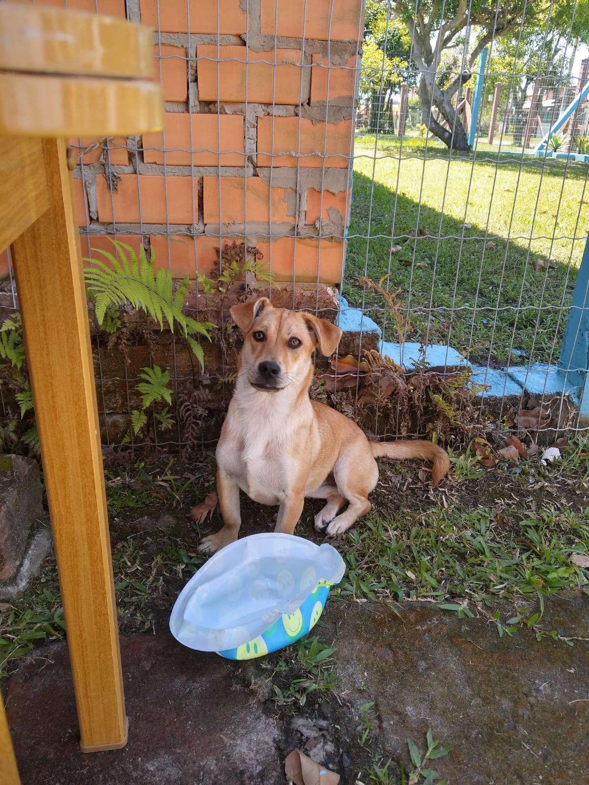

Fumaça
Braba que só Deus na causa, essa lindona chegou paara ficar quando a Sofia -nossa outra cadelinha- nos deu um susto e achamos que ela iria morrer.
Adotamos ela para fazer companhia para nossa pinscher que sofreria muito se a Sofia se fosse, mas acabou que a Sofi não faleceu, e agora estávamos com 3 cachorros dentro de casa.
Seu nome veio porque sua mãe se chama "Chaminé". Ela é braba com estranhos, protege a casa como ninguém e quer brigar com cachorros que são o dobro de seu tamanho, mas não pode ser mais meiga e carinhosa com os membros da família.
Com a pandemia de Covid-19, nossa família teve uma desorganização financeira muito grande, e eis que um dia a bonita entra no cio e um cachorro passou pelas nossas grandes para dentro do pátio. O resultado? 8 filhotes!
Com a benção divina conseguimos doar todos e logo a moça foi castrada, mas pensa na bagunça que foi com 12 cachorros em casa -sendo 8 filhotes, a Fumaça e mais os cachorros que já tínhamos-.
- 